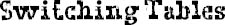

THE NEXT DAY at lunch, stupid me, I sat down at a table with Tristan, Nino, and Pablo. I thought maybe they were safe because they weren’t really considered popular, but they weren’t out there playing D&D at recess, either. They were sort of in-betweeners. And, at first, I thought I scored because they were basically too nice to not acknowledge my presence when I walked over to the table. They all said “Hey,” though I could tell they looked at each other. But then the same thing happened that happened yesterday: our lunch table was called, they got their food, and then headed toward a new table on the other side of the cafeteria.
Unfortunately, Mrs. G, who was the lunch teacher that day, saw what happened and chased after them.
“That’s not allowed, boys!” she scolded them loudly. “This is not that kind of school. You get right back to your table.”
Oh great, like that was going to help. Before they could be forced to sit back down at the table, I got up with my tray and walked away really fast. I could hear Mrs. G call my name, but I pretended not to hear and just kept walking to the other side of the cafeteria, behind the lunch counter.
“Sit with us, Jack.”
It was Summer. She and August were sitting at their table, and they were both waving me over.